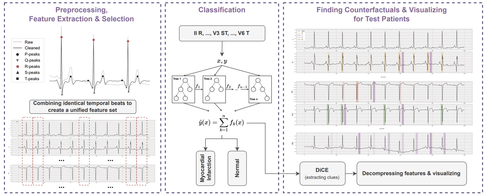

Selected work · Imaging & biosignals
An explanation a cardiologist can test
Not where the model looked, but what would have had to be different for it to change its mind.

A saliency map over an ECG says where a model attended. It does not say what would have had to change for the decision to flip, which is the only form an explanation can take that a clinician is able to check against a patient.
The pipeline identifies beats in the cleaned signal, extracts features across leads, and classifies myocardial infarction against normal. Counterfactuals are then generated over those features and decompressed back onto the original trace, so the explanation arrives as a marked region of the ECG rather than as a separate figure.
The explanation is therefore stated as a change: these intervals, moved this far, reverse the decision.
If the model had not actually moved when the named features were changed, the counterfactuals would be describing the feature space rather than the ECG.
T. Tanyel, S. Atmaca, K. Gökçe, M. Y. Balık, A. Güler, E. Aslanger, İ. Öksüz · Biomedical Signal Processing and Control, 2025
Everything here states what would have shown it was wrong.
All selected work →